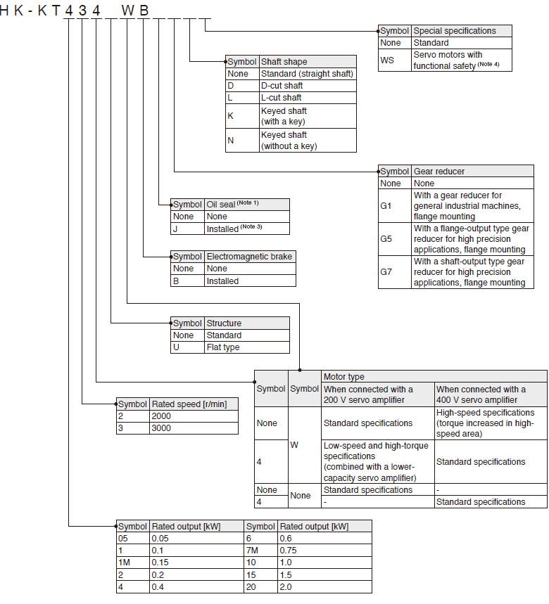
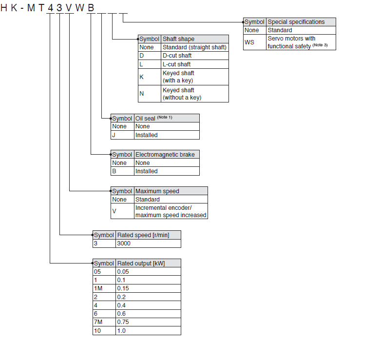
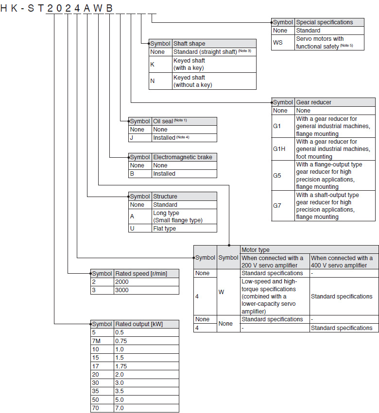
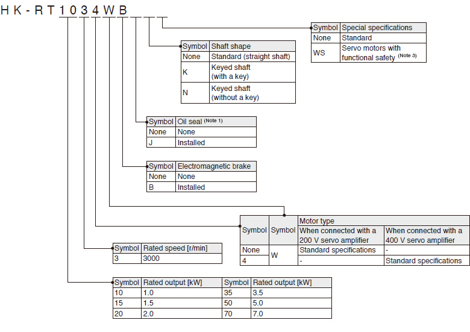
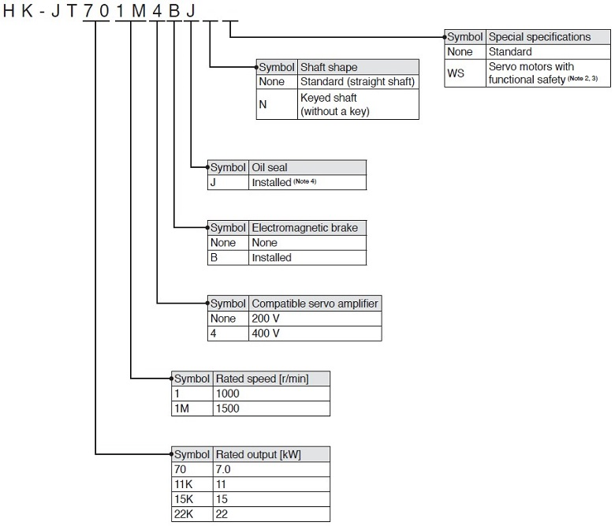

MELSERVO-J5 Series Rotary Servo Motor Model Designation

HK-KT Series (Low Inertia, Small Capacity) (Note 2)

- Notes:
- 1. The dimensions are the same regardless of whether or not an oil seal is installed.
- 2. This section describes what each symbol in a model name indicates. Some combinations of symbols are not available.
- 3. A geared servo motor with an oil seal installed is not available.
- 4. The dimensions of the servo motors with functional safety are the same as those of the standard servo motors.
HK-MT Series (Ultra-Low Inertia, Small Capacity) (Note 2)

Notes:
- 1. The dimensions are the same regardless of whether or not an oil seal is installed.
- 2. This section describes what each symbol in a model name indicates. Some combinations of symbols are not available.
- 3. The dimensions of the servo motors with functional safety are the same as those of the standard servo motors.
HK-ST Series (Medium Inertia, Medium Capacity) (Note 2)

- Notes:
- 1. The dimensions are the same regardless of whether or not an oil seal is installed.
- 2. This section describes what each symbol in a model name indicates. Some combinations of symbols are not available.
- 3. The standard HK-ST G1/G1H servo motors have a keyed shaft (with a key).
- 4. A geared servo motor with an oil seal installed is not available.
- 5. The dimensions of the servo motors with functional safety are the same as those of the standard servo motors.
HK-RT Series (Ultra-Low Inertia, Medium Capacity) (Note 2)

- Notes:
- 1. The dimensions are the same regardless of whether or not an oil seal is installed.
- 2. This section describes what each symbol in a model name indicates. Some combinations of symbols are not available.
- 3. The dimensions of the servo motors with functional safety are the same as those of the standard servo motors.
HK-JT series (Low Inertia, Medium/Large Capacity) (Note 1)NEW

- Notes:
- 1. This section describes what each symbol in a model name indicates. Some combinations of symbols are not available.
- 2. The dimensions of the servo motors with functional safety are the same as those of the standard servo motors.
- 3. Available only with the servo motors with the rated speed of 1500 r/min.
- 4. Oil seal is installed in HK-JT series as standard.